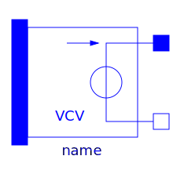
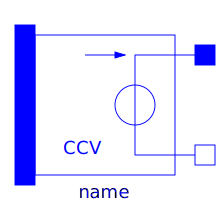

This package contains additional useful models which do not belong to the original SPICE3 model set.
| Name | Description |
|---|---|
| POLY function of SPICE2 | |
|  E_VCV_POLY | Polynomial voltage controlled voltage source, like SPICE2 |
| G_VCC_POLY | Polynomial voltage controlled current source, like SPICE2 |
|  H_CCV_POLY | Polynomial current controlled voltage source, like SPICE2 |
| Polynomial current controlled current source, like SPICE2 |